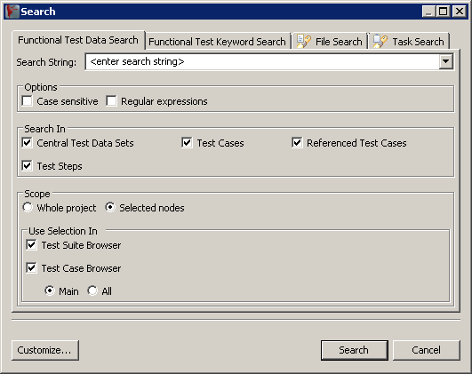

You can open the search dialog (3.36) from the toolbar, by pressing »CTRL+H« or via the menu:
Figure 3.36: Search Dialog
|

|
The search dialog allows you to search the current Project in the current working language for:
- Keywords 3.29.5.1 (Test Cases , Test Steps , Test Suites , Test Jobs and categories).
- Test data used in Test Cases or central test data sets 3.29.5.2.
- Files in the workspace 3.29.5.3.
Subsections
Copyright BREDEX GmbH 2014. Made available under the Eclipse Public License v1.0.